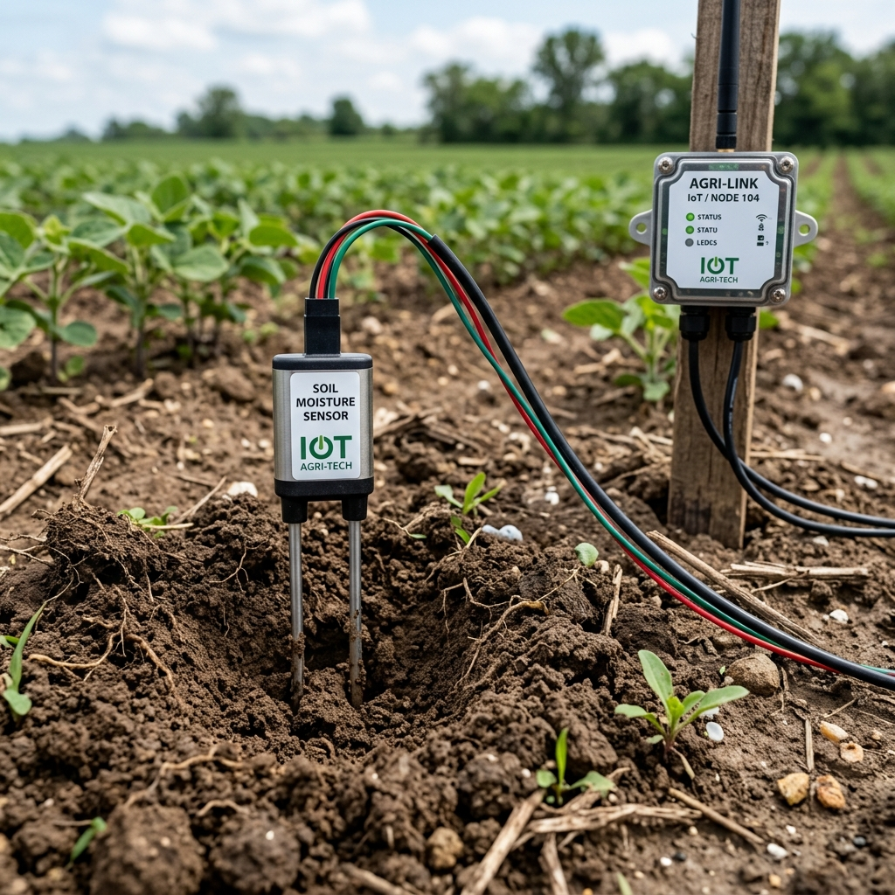
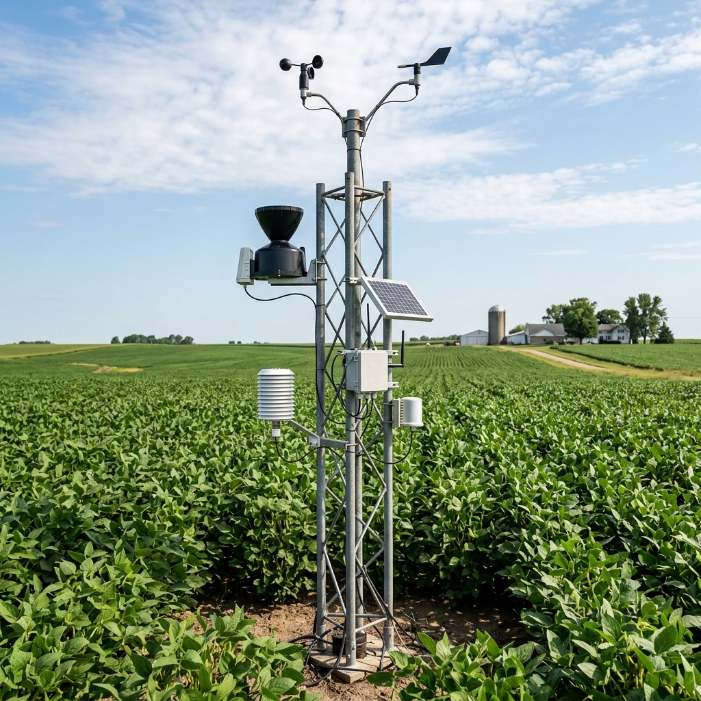

")
Healthy Sugarcane Crop
Healthy Sugarcane Crop
- Tropical Crop: Cultivated for sugar, jaggery, ethanol, and biofuel.
- Climate: Requires warm temperatures between 20°C and 35°C.
- Optimal Soil: Thrives in fertile, well-drained loamy soil with sunlight.
- Moisture Range: Ideal soil moisture is 60–80% of field capacity.
- Water Need: Requires 1500–2500 mm of water across the season.
▸ Click image to view details
")
Drip Irrigation System
Drip Irrigation System
- Root Delivery: Supplies water slowly and directly through pipes and emitters.
- Water Savings: Reduces water consumption by 30–60% vs flood method.
- Minimized Loss: Reduces surface runoff and soil evaporation significantly.
- Fertigation: Delivers liquid fertilizers directly to crop roots efficiently.
- Key Components: Pipelines, drip laterals, emitters, filters, and valves.
▸ Click image to view details

Soil Moisture Sensor
Soil Moisture Sensor
- Real-Time Data: Measures soil water content and sends live telemetry.
- Working Principle: Detects electrical resistance or capacitance in soil.
- Smart Scheduling: Determines exactly when to start and stop irrigation.
- Stress Prevention: Prevents over-irrigation and root-zone water stress.
- Yield Boost: Conserves water while optimizing crop root development.
▸ Click image to view details

Weather Monitoring Station
Weather Monitoring Station
- Environmental Data: Automated station tracking local micro-climate.
- Monitored Parameters: Measures temperature, humidity, rain, and wind.
- AI Forecasting: Integrates with models to predict upcoming rainfall.
- Cost Reduction: Postpones scheduled irrigation when rain is expected.
- Precision Farming: Enhances water-use efficiency and crop health.
▸ Click image to view details